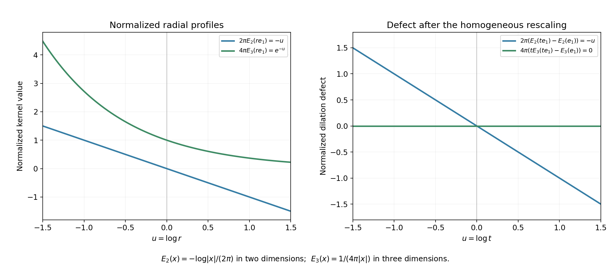

Homogeneous elliptic kernels and logarithmic scaling
Written by GPT-6.1 Sol (OpenAI), October 2026. Self-checked by the writing AI. Public domain (CC0).
An elliptic polynomial has an ordinary reciprocal at every sufficiently large real frequency. Cutting that reciprocal off near its finite zeros gives an inverse with a smooth error. For a homogeneous polynomial, a radial normalization at zero removes the error completely. Its failure to scale homogeneously is one explicit polynomial times a logarithm.
We first construct the inverse with a smooth error, including arbitrary complex lower-order coefficients. We then compute the radial residue of the homogeneous reciprocal and turn it into the exact logarithmic term. The construction works in every positive dimension and for complex elliptic principal symbols.
Basic references are Schwartz functions and Fourier inversion, for tempered distributions and the Fourier identities; Fundamental solutions and active directions, for point sources and the elementary Laplace and Cauchy kernels; and Noncharacteristic directions and microlocal regularity, Corollary 7.1, for the optional analytic regularity conclusion. The Taylor-subtracted frozen inverse in Local inverses and distance-weighted elliptic estimates, Section 2, gives the general low-frequency extension; the radial normalization below computes its dilation law. Richard Melrose's lecture on homogeneous distributions and Lars Hörmander's treatment of elliptic fundamental solutions are named at the end.
We use
\[ D_j=-i\partial_{x_j},\qquad \widehat f(\xi)=\int e^{-ix\cdot\xi}f(x)\,dx,\qquad \mathcal F^{-1}h(x)=(2\pi)^{-n}\int e^{ix\cdot\xi}h(\xi)\,d\xi . \tag{1.1} \]All distribution pairings are bilinear. The sphere measure below is ordinary Euclidean surface measure.
1. Inverting the high frequencies
Let \(P=p_m+p_{m-1}+\cdots+p_0\), where \(p_j\) is homogeneous of degree \(j\), \(m\ge1\), and
\[ p_m(\xi)\ne0\qquad(\xi\in\mathbb R^n\setminus\{0\}). \tag{1.2} \]No reality condition is imposed on any coefficient.
Theorem 1.1 (an elliptic parametrix). There are a tempered distribution \(K\), smooth away from the origin, and an entire function \(w\) such that
\[ P(D)K=\delta_0+w. \tag{1.3} \]The restriction of \(w\) to real space is Schwartz. A parametrix can also be chosen with compact support in any prescribed neighborhood of the origin; its error is then a compactly supported smooth function.
Proof. Compactness of the unit sphere and homogeneity give \(|p_m(\xi)|\ge c|\xi|^m\). The lower terms have sum at most \(C(1+|\xi|)^{m-1}\). Therefore, for some \(R\ge1\),
\[ |P(\xi)|\ge(c/2)|\xi|^m\qquad(|\xi|\ge R). \tag{1.4} \]Choose \(\chi\in C_c^\infty\), equal to one on a neighborhood of the closed ball of radius \(R\), and define
\[ a(\xi)=\frac{1-\chi(\xi)}{P(\xi)},\qquad K=\mathcal F^{-1}a,\qquad w=-\mathcal F^{-1}\chi . \tag{1.5} \]The quotient is set to zero near the zero set of \(P\). It is smooth everywhere and polynomially bounded. Thus it defines a tempered distribution. Fourier multiplication gives (1.3).
We give the estimates that prove smoothness off the origin. Outside a fixed ball, differentiate \(Pa=1\). Induction on \(|\alpha|\), using
\[ P\,\partial^\alpha a =-\sum_{0<\beta\le\alpha}{\alpha\choose\beta} (\partial^\beta P)\,\partial^{\alpha-\beta}a, \tag{1.6} \]gives
\[ |\partial^\alpha a(\xi)| \le C_\alpha(1+|\xi|)^{-m-|\alpha|}. \tag{1.7} \]Indeed each nonzero derivative of \(P\) has bound \(C_\beta|\xi|^{m-|\beta|}\); multiplying the inductive bounds and dividing by (1.4) gives the indicated power. The fixed transition annulus changes only the constants.
For any derivative index \(\gamma\), choose an integer \(N>n+|\gamma|-m\). The function \(\partial_{\xi_j}^N((i\xi)^\gamma a)\) is integrable. The Fourier differentiation identity consequently makes
\[ x_j^N\partial_x^\gamma K \tag{1.8} \]a continuous function, up to a harmless nonzero constant factor. On \(x_j\ne0\), division by \(x_j^N\) gives a continuous representative of \(\partial^\gamma K\). The sets \(x_j\ne0\) cover the complement of the origin. These representatives agree on overlaps as distributions. For all \(\gamma\), continuous distributional derivatives give a smooth function: convolve locally with smooth approximate identities, apply the fundamental theorem of calculus to their derivatives, and pass to the locally uniform continuous limits. Hence \(K\) is smooth there.
The inverse Fourier transform of \(\chi\) is Schwartz by repeated integration by parts. Its formula in (1.5) is also defined for every complex \(x\); compact frequency support permits every complex derivative under the integral and gives locally uniform convergence. Thus \(w\) is entire.
Finally take \(\psi\in C_c^\infty\), equal to one near the origin and supported in the prescribed neighborhood. Then
\[ P(D)(\psi K)=\delta_0+\psi w+[P(D),\psi]K. \tag{1.9} \]Every derivative of \(\psi\) in the commutator is supported away from zero, where \(K\) is smooth. The last two terms are therefore compactly supported smooth functions. This proves the final assertion. \(\square\)
For order zero, \(P=c\ne0\), the exact inverse is \(K=c^{-1}\delta_0\), with zero error.
2. A radial normalization of the reciprocal
Now let \(p\) itself be homogeneous elliptic of degree \(m\ge1\). Put \(q=m-n\). For a complex parameter \(\lambda\) with \(\operatorname{Re}\lambda>q\), the locally integrable reciprocal defines
\[ \langle T_\lambda,\varphi\rangle =\int_{\mathbb R^n}\frac{|\xi|^\lambda}{p(\xi)}\varphi(\xi)\,d\xi =\int_{S^{n-1}}\frac1{p(\omega)} \int_0^\infty r^{\lambda-q-1}\varphi(r\omega)\,dr\,dS(\omega). \tag{2.1} \]The tests \(\varphi\) are Schwartz. Infinity causes no problem on any bounded parameter set.
If \(q<0\), the family is holomorphic near zero and we set \(T=T_0\), \(R=0\). For \(q\ge0\), write
\[ A_j(\omega,\varphi) =\frac{(\omega\cdot\nabla)^j\varphi(0)}{j!}, \qquad 0\le j\le q. \tag{2.2} \]Taylor subtraction continues the pairing in (2.1) to a meromorphic expression:
\[ \begin{split} \langle T_\lambda,\varphi\rangle =\int_{S^{n-1}}\frac1{p(\omega)}\bigg[ &\int_0^1 r^{\lambda-q-1} \left(\varphi(r\omega)-\sum_{j=0}^q r^j A_j(\omega,\varphi)\right)\,dr\\ &+\int_1^\infty r^{\lambda-q-1}\varphi(r\omega)\,dr +\sum_{j=0}^q\frac{A_j(\omega,\varphi)}{\lambda+j-q} \bigg]\,dS(\omega). \end{split} \tag{2.3} \]The integral terms are holomorphic for \(\operatorname{Re}\lambda>-1\). Taylor's remainder is \(O(r^{q+1})\), uniformly on the sphere, so its radial integrand is \(O(r^{\operatorname{Re}\lambda})\). Any number of parameter derivatives only adds a power of \(\log r\), still integrable on compact subsets of that half-plane. At infinity use a sufficiently high Schwartz weight. The same estimates bound each pairing by finitely many Schwartz seminorms. They prove that the Laurent coefficients are tempered distributions, not merely pointwise functionals.
Near zero,
\[ T_\lambda=\frac{R}{\lambda}+T+O(\lambda), \qquad \langle R,\varphi\rangle =\frac1{q!}\int_{S^{n-1}} \frac{(\omega\cdot\nabla)^q\varphi(0)}{p(\omega)}\,dS(\omega). \tag{2.4} \]Thus \(R\) is supported at the origin and is a combination of delta derivatives of order \(q\). Formula (2.3), with the pole removed, is the definition of \(T\). For \(n=1\), sphere integration means the sum over \(\omega=1,-1\).
Lemma 2.1. In every case,
\[ pT=1,\qquad pR=0. \tag{2.5} \]Proof. If \(q<0\), multiply the locally integrable reciprocal by \(p\). If \(q\ge0\), apply (2.3) to \(p\varphi\). Since \(q=m-n<m\), its derivatives through order \(q\) vanish at zero. All the subtractions and rational terms disappear. What remains is the pairing of \(|\xi|^\lambda\) with \(\varphi\), holomorphic near zero, with value \(\int\varphi\) there. Comparing the Laurent coefficients gives (2.5). \(\square\)
We can therefore take \(E=\mathcal F^{-1}T\) as an exact tempered fundamental solution.
3. The logarithmic scaling law
For a distribution \(v\), the notation \(v(t\,\cdot)\), \(t>0\), means
\[ \langle v(t\,\cdot),\varphi\rangle =t^{-n}\langle v,\varphi(\,\cdot/t)\rangle . \tag{3.1} \]It is homogeneous of degree \(d\) if this equals \(t^d\langle v,\varphi\rangle\).
Theorem 3.1 (the homogeneous elliptic form). There is a tempered fundamental solution
\[ E(x)=E_0(x)-Q(x)\log|x|, \tag{3.2} \]where \(E_0\) is homogeneous of degree \(q=m-n\), locally integrable on all of \(\mathbb R^n\), and smooth off the origin. If \(q<0\), set \(Q=0\). If \(q\ge0\), then
\[ Q(x)=\frac{i^q}{(2\pi)^n q!} \int_{S^{n-1}}\frac{(x\cdot\omega)^q}{p(\omega)}\,dS(\omega). \tag{3.3} \]The polynomial \(Q\) is homogeneous of degree \(q\). It is zero in odd dimension, including the cases \(m\ge n\). The exact dilation law is
\[ E(tx)=t^q\bigl(E(x)-Q(x)\log t\bigr)\qquad(t>0). \tag{3.4} \]Equations (3.2) and (3.4) hold as distributions and as functions away from zero.
Proof. Start with the \(T\) in Section 2. Away from zero in frequency space it is \(1/p\). Hence the difference between \(T\) and the high-frequency reciprocal in (1.5), now for \(P=p\), has compact support. The inverse Fourier transform of a compactly supported distribution is smooth, indeed entire: insert a fixed cutoff in its exponential pairing; the finite-order bound on that compact set permits all derivatives and its convergent complex exponential series, locally uniformly. Thus \(E\) differs from the \(K\) in Theorem 1.1 by an entire function. In particular \(E\) is smooth off the origin.
For the convergent range of (2.1), substitution gives
\[ T_\lambda(t\,\cdot)=t^{-m+\lambda}T_\lambda,\qquad (\mathcal F^{-1}T_\lambda)(t\,\cdot) =t^{q-\lambda}\mathcal F^{-1}T_\lambda . \tag{3.5} \]The first equality continues meromorphically through (2.3), by applying the scalar identity theorem to every test pairing. The second follows from the Fourier substitution rule and has the same continuation. Inverting (2.4), the residue is \(Q=\mathcal F^{-1}R\). Applying (2.4) to the exponential gives exactly (3.3), with \(i^q\), because the pairings are bilinear. Comparing constant Laurent coefficients in the second equality of (3.5) proves (3.4). If \(q<0\), evaluate the holomorphic equality at zero instead.
Define \(E_0=E+Q\log|x|\) on the punctured space. Equation (3.4) makes it homogeneous of degree \(q\). Smoothness on the sphere consequently gives
\[ |E_0(x)|\le C|x|^q,\qquad |E(x)|\le C|x|^q(1+|\log|x||) \tag{3.6} \]there, with the logarithmic factor unnecessary when \(Q=0\). Since \(q+n=m>0\), the right side is locally integrable at zero. The functions also have at most polynomial growth at infinity. They therefore define tempered distributions globally. Their scaling law is still (3.4), by ordinary substitution in their locally integrable pairings.
There is no additional distribution concentrated at the origin. Here is the elementary reason. A distribution \(v\) supported at zero has finite order \(M\) on a fixed compact neighborhood. If a test has all jets through order \(M\) zero at zero, multiply it by a cutoff \(\eta(x/\varepsilon)\) equal to one near zero. Taylor's integral remainder and the product rule make all its derivatives of orders at most \(M\) bounded by \(C\varepsilon\). The finite-order estimate and support property imply that \(v\) kills the test. Thus \(v\) depends only on those finitely many jets and is a linear combination of \(\partial^\alpha\delta_0\), \(|\alpha|\le M\). These distributions have dilation degrees \(-n-|\alpha|\). No nonzero such combination can have degree \(q>-n\): compare its coefficients under dilation, or test its distinct Taylor monomials.
The difference between \(E\) and the globally defined function in (3.2) is supported at zero and homogeneous of degree \(q\), since the logarithmic defects cancel. The preceding fact makes the difference zero. This proves the claimed distributional identity.
Finally, if \(q\ge0\), replace \(\omega\) by \(-\omega\) in (3.3). Its integrand changes by
\[ (-1)^{q-m}=(-1)^n. \tag{3.7} \]In odd dimension the integral is its own negative, hence zero. \(\square\)
The smooth functions \(E\) and \(E_0\) are in fact real analytic off zero. For \(E\), apply the available analytic elliptic regularity theorem, Corollary 7.1 of the microlocal regularity chapter, to \(p(D)E=0\) there. The polynomial-logarithm term is real analytic there as well.
In order zero the exact inverse \(c^{-1}\delta_0\) is homogeneous of degree \(-n\) and smooth off zero. It is not represented by a locally integrable function. The positive-order hypothesis in Theorem 3.1 is what gives the integrability inequality \(q>-n\).
4. Examples
Example 4.1 (the dimension that produces a logarithm). For \(p(\xi)=|\xi|^2\), the operator is \(-\Delta\). In dimension two, (3.3) gives \(Q=1/(2\pi)\). In dimension three, \(m<n\), so \(Q=0\). Choose the familiar representatives
\[ E_2(x)=-\frac1{2\pi}\log|x|,\qquad E_3(x)=\frac1{4\pi|x|}. \tag{4.1} \]Their point-source normalizations are the Green-flux calculation in the fundamental-solution chapter, also given in Harmonic potentials and real carriers, equation RC4. A constant may be subtracted from the two-dimensional radial finite part to obtain the displayed representative. The scaling laws are
\[ E_2(tx)-E_2(x)=-\frac{\log t}{2\pi},\qquad tE_3(tx)=E_3(x). \tag{4.2} \]Thus the logarithm measures a precise failure of homogeneous scaling; it is not a large-frequency approximation.

Radial profiles and dilation. The horizontal coordinate in both panels is \(u=\log r\), or \(u=\log t\) for the dilation parameter. On the left, the normalized two-dimensional profile is \(2\pi E_2(re_1)=-u\), whereas the three-dimensional profile is \(4\pi E_3(re_1)=e^{-u}\). On the right, \(2\pi(E_2(te_1)-E_2(e_1))=-u\), while \(4\pi(tE_3(te_1)-E_3(e_1))=0\). These are kernels for two different dimensions, with the displayed normalizations; the curves sample the exact formulas (4.1)–(4.2). Geometry and reproduction source.
Example 4.2 (a polynomial multiplying the logarithm). In dimension two take \(p(\xi)=|\xi|^4\), so \(q=2\). Rotational symmetry and \(\int_0^{2\pi}\cos^2\theta\,d\theta=\pi\) give
\[ Q(x)=-\frac{|x|^2}{8\pi},\qquad E(x)=\frac{|x|^2\log|x|}{8\pi}. \tag{4.3} \]Here \(p(D)=\Delta^2\). Off zero, \(\Delta(|x|^2\log|x|)=4\log|x|+4\). This equality holds distributionally on all of the plane: in integration by parts outside a circle of radius \(\varepsilon\), the boundary terms have bounds \(C\varepsilon^2|\log\varepsilon|\) and \(C\varepsilon^3|\log\varepsilon|\), and tend to zero. Applying \(\Delta\) once more and using \(\Delta\log|x|=2\pi\delta_0\) gives \(\Delta^2E=\delta_0\). The dilation defect is \(t^2|x|^2\log t/(8\pi)=-t^2Q(x)\log t\), with exactly the sign in (3.4).
Example 4.3 (a complex elliptic first-order symbol). In the plane, \(p(\xi)=\xi_1+i\xi_2\) has no nonzero real zero. With \(z=x_1+ix_2\),
\[ E(z)=\frac{i}{2\pi z},\qquad p(D)=-2i\,\partial_{\bar z}. \tag{4.4} \]The Cauchy identity \(\partial_{\bar z}(1/(\pi z))=\delta_0\), proved in the linked Cauchy-kernel reading, gives \(p(D)E=\delta_0\). This is a locally integrable homogeneous kernel of degree \(-1\); \(m<n\) and no logarithm occurs. Ellipticity here does not require a real principal symbol.
Example 4.4 (lower-order zeros do not obstruct the parametrix). For
\[ P(\xi_1,\xi_2)=|\xi|^2+2i\xi_1-3, \tag{4.5} \]the real zero set contains \((0,\sqrt3)\) and \((0,-\sqrt3)\). Nevertheless, when \(|\xi|\ge6\),
\[ |P(\xi)|\ge|\xi|^2-2|\xi|-3\ge\frac12|\xi|^2 . \tag{4.6} \]Choose the cutoff in (1.5) equal to one on a slightly larger ball. Its numerator vanishes around every real zero, and Theorem 1.1 applies. The error is smooth and entire; the kernel is smooth away from zero. This construction makes no claim that \(1/P\) is an ordinary function across its finite zeros.
5. Exercises with complete solutions
Exercise 1 (20 points). In dimension two consider \(p(\xi)=(\xi_1+i\xi_2)^3\). Show that it is elliptic. Compute the polynomial \(Q\) in (3.3). Explain why even dimension and \(m\ge n\) do not by themselves force a nonzero logarithmic term.
Solution. Its modulus is \(|\xi|^3\). On the unit circle \(p(\omega)=e^{3i\theta}\) and \(q=1\). The factor \(x\cdot\omega\) is a linear combination of \(e^{i\theta}\) and \(e^{-i\theta}\). Dividing by \(e^{3i\theta}\) gives modes of frequencies \(-2\) and \(-4\), whose full-circle integrals vanish. Thus \(Q=0\). The resonance permits a residue; its actual spherical moments may cancel. Assign 6 points to ellipticity, 10 to the two modes and 4 to the conclusion.
Exercise 2 (25 points). In dimension four, compute \(Q\) for \(p(\xi)=|\xi|^4\) and verify that \(-\log|x|/(8\pi^2)\) is a fundamental solution. Use the area \(2\pi^2\) of the unit three-sphere and the four-dimensional Laplace kernel.
Solution. Here \(q=0\), so (3.3) gives \(Q=2\pi^2/(2\pi)^4=1/(8\pi^2)\). Away from zero, \(\Delta\log|x|=2|x|^{-2}\). The first equality has no additional point mass: the boundary flux at radius \(\varepsilon\) is \(O(\varepsilon^2)\), and the other boundary term is \(O(\varepsilon^3|\log\varepsilon|)\). The four-dimensional kernel for \(-\Delta\) is \(1/(4\pi^2|x|^2)\), so \(\Delta|x|^{-2}=-4\pi^2\delta_0\). Consequently
\[ \Delta^2\left(-\frac{\log|x|}{8\pi^2}\right) =-\frac1{4\pi^2}\Delta|x|^{-2}=\delta_0. \tag{5.1} \]The sphere area follows from the Gaussian integral: \(\pi^2=|S^3|\int_0^\infty e^{-r^2}r^3\,dr=|S^3|/2\). Assign 8 points to \(Q\), 10 to the distributional identities and 7 to the normalization.
Exercise 3 (25 points). Let \(\chi_R(\xi)=\chi(\xi/R)\), where \(\chi=1\) on the unit ball and is supported in the ball of radius two. Take both radii sufficiently large to include all real zeros of an elliptic \(P\). Compute the scaling of the error \(w_R\) and prove that two resulting parametrices differ by an entire Schwartz function.
Solution. Fourier substitution gives
\[ w_R(x)=-R^n(\mathcal F^{-1}\chi)(Rx). \tag{5.2} \]Its derivatives acquire the corresponding factor \(R^{n+|\alpha|}\). For complex \(x\), the compact-frequency formula gives an exponential factor at most \(e^{2R|\operatorname{Im}x|}\), multiplied by a derivative-dependent constant. The Fourier transform of the difference of two kernels is \((\chi_{R_1}-\chi_{R_2})/P\). It is smooth and compactly supported: the numerator vanishes around every real zero of \(P\), and the denominator is nonzero on the remaining annulus. Its inverse transform is Schwartz by integration by parts and entire by the compact integral formula. Assign 10 points to scaling, 5 to complex growth and 10 to the difference.
Exercise 4 (30 points). For \(p(\xi)=|\xi|^4\) in two dimensions, compute the residue distribution \(R\) in (2.4), its value on \(\varphi(\xi)=e^{-|\xi|^2}\), and its inverse Fourier transform. Verify \(pR=0\).
Solution. Here \(q=2\) and \(p(\omega)=1\). The circle moments are \(\int\omega_j^2\,dS=\pi\), \(\int\omega_1\omega_2\,dS=0\). Therefore
\[ R=\frac\pi2\Delta_\xi\delta_0,\qquad \langle R,e^{-|\xi|^2}\rangle=-2\pi,\qquad \mathcal F^{-1}R=-\frac{|x|^2}{8\pi}. \tag{5.3} \]There is no transpose sign in the second derivative of a delta. The Fourier inverse of \(\Delta_\xi\delta_0\) is \(-(2\pi)^{-2}|x|^2\), giving the last constant. Multiplication by a polynomial vanishing to order four kills every delta derivative of order two: its pairing differentiates \(p\varphi\) only twice at zero, yielding zero. This proves \(pR=0\) directly. Assign 10 points to the moments and distribution, 10 to the Gaussian value and Fourier constant, and 10 to multiplication.
References
- Schwartz functions and Fourier inversion, Sections F1–F5: Fourier operations and distributional inversion.
- Cauchy kernels and boundary limits, Theorem 1.1 and Corollary 1.2: the complex first-order point source.
- Fundamental solutions and active directions: elementary point-source kernels; Harmonic potentials and real carriers, equation RC4, for the Laplace normalization.
- Local inverses and distance-weighted elliptic estimates, Section 2: a Taylor-subtracted inverse for a homogeneous elliptic symbol in every order and dimension.
- Noncharacteristic directions and microlocal regularity, Corollary 7.1: analytic elliptic regularity.
- Richard Melrose, 18.155 Lecture 9, 3 October 2013: homogeneous distributions and the spherical moment obstruction.
- Lars Hörmander, The Analysis of Linear Partial Differential Operators I, second edition, Springer, 1990: homogeneous elliptic fundamental solutions and elliptic parametrices.
The original chapter, examples and exercise solutions use CC0 1.0. Cited works retain their own terms.